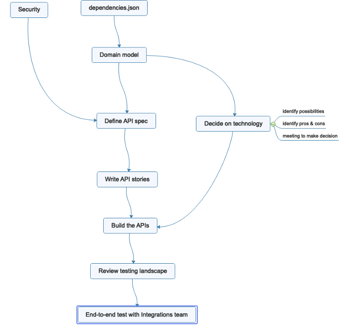

Don’t let JIRA stop you from visualizing dependencies
My team is at the beginning of a project. We’ve got a lot of potential features. Our task yesterday was to start breaking down big dreams into specific pieces of work we can pick up.
As we started to define what we wanted to build, we came across items that had to come first: come up with a proposal before we meet to review it with our stakeholders. Other items weren’t necessarily “blocked,” but would make more sense to pick up in a sequence. As my developers watched me painstakingly searched for completely forgettable JIRA story number so I could mark each story as “blocked” or “is blocked by,” one of my developers asked one of the best questions I heard all day: “Is there a way we can see this visually?”
My developer searched for JIRA solutions to this problem and came across a few that required admin access or JIRA version 8. We spent a few minutes getting lost in the text and subsequently interactive credits on the About JIRA page. None of us noticed this yesterday, but the start screen for the game gave us the answer we needed: we have JIRA 7 (Roman numerals on the title page), not JIRA 8.
 JIRA credits: A surprising diversion in our work day.
JIRA credits: A surprising diversion in our work day.
Without a big sheet of paper (we had post-its, but no where to stick them) or a whiteboard in the conference room we were crammed into, I pulled up my go-to tool for visualizations: MindMaster. I’ve got other recommendations for mind mapping software at the bottom of my article here. I’m currently stuck on MindMaster since it’s free and not web-hosted.
I added a bunch of Floating topics and connected them with Relationship arrows. We outlined the first group of stories that we’d collected into an epic. We fiddled a bit with aligning the stories that could be picked up in parallel so they appeared at the earliest point we could pick them up. We came back to refine and add a couple items as we outlined other epics. The few minutes we dedicated to creating this diagram gave us enough information to decide what order we should pick up work for the next week or two.

We may be looking at our sprint board in the coming days to review how all the work is going. But I know that no developer is going to trace all the “blocks” and “is blocked by” links in the stories. They’re going to look at this diagram to know when to pair or mob because we can’t pick more things up.
Moral of the story: Don’t let your tools constrain you.
Originally published on Medium.